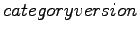
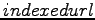

Nächste Seite: Index und Dokumentstruktur Aufwärts: Datenmodell Vorherige Seite: Datenmodell Inhalt Index
Die Datenbank besteht zur Zeit aus 4 Tabellen (siehe Abbildung 2.2). Die wichtigste Tabelle des derzeitigen Standes ist die -Tabelle. Sie beinhaltet die Kategoriebäume der Projekte eines Servers.
Um dieBäume in der Datenbank zu repräsentieren haben wir Verschachtelte Mengen (nested sets) eingesetzt. Dadurch können wir mit einfachen select-statements den Baum durchsuchen, allerdings ist das einfügen oder edititeren des Baumes aufwendig. Da wir Serverseitig hauptsächlich Suchvorgänge zu bedienen haben, wollten wir eine rekursive Tabellenstruktur in der Datenbank vermeiden. Die Verschachtelten Mengen boten uns eine gute Variante dies zu umgehen. Genauere Informationen hierzu befinden sich im Kapitel 2.4.3 .
Die Tabelle  könnte prinzipiell zu jeder Kategorie eine Versionsnummer mitführen. Derzeit wird dies nur für Wurzelknoten getan. Damit hat jeder vom Server verwaltete Kategoriebaum eine Versionsnummer. Diese wird benutzt um die Aktualität der Bäume zwischen den Clients untereinander und mit dem Server sicherzustellen. Es ist durchaus vorstellbar Versionsnummern bei großen Projekten auch für Teilbäume zu verteilen, was derzeit aber nicht geplant ist.
Zu jeder Kategorie können beliebig viele Urls zugeordnet werden. Diese werden in der  Tabelle gehalten. Jede Url, die indiziert wurde, wird mit Datum in dieser Tabelle gespeichert. Somit kann schnell festgestellt werden, ob eine URL schon einmal hinzugefügt wurde und zu welchen Kategorien sie bisher zugeordnet war. Da der Index selbst auch doppelte Einträge zulässt, ist es wichtig vor dem Einfügen das vorhandensein überprüfen zu können.
Jede Url kann auch beliebig zu Kategorien zugeordnet werden, da wir dieselbe Url in verschiedenen Kategoriebäumen oder auch in verschiedenen Kategorien in ein und demselben Baum zulassen möchten. Die Nutzer von Teamfound entscheiden in welche Kategorie ein Document gehört. Unabhängig davon wäre eine Überprüfung, ob solch eine Zuordnung sinnvoll ist, auch kaum umzusetzbar.
Im Index wird allerdings zu jeder URL nur ein einziges Dokument (siehe 2.2.1) abgelegt. Wichtig ist dabei, dass eine Url, die einer Kategorie hinzugefügt wird, auch allen zugehörigen Elternkategorien zugeordnet wird. Das passiert in der Datenbank als auch im Dokument des Indexes. Dadurch werden bei einer Suchanfrage innerhalb einer Kategorie automatisch auch alle Urls geliefert, die Kindkategorien dieser Kategorie zugeordnet wurden.
Das Datum in der Tabelle wird genutzt um Urls zu erkennen, welche schon lange im Index liegen. Diese werden dementsprechend neu indiziert.